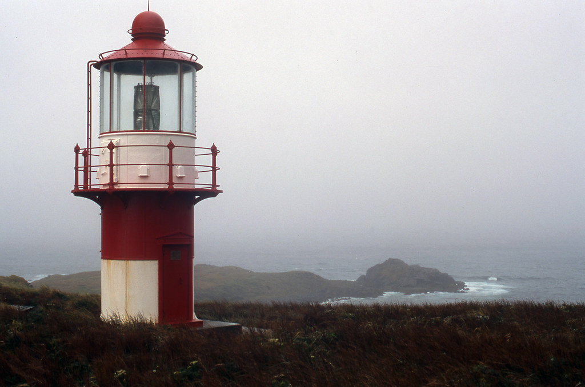
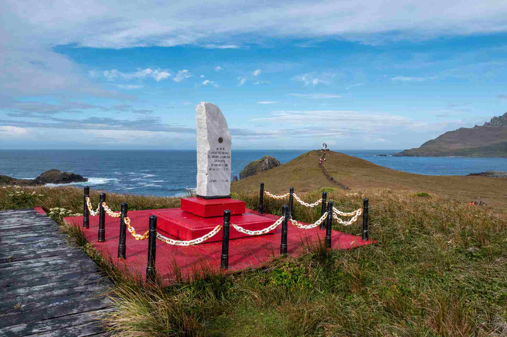
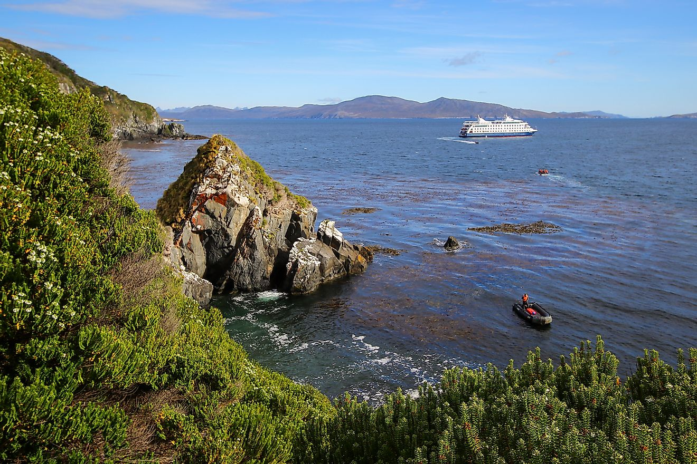
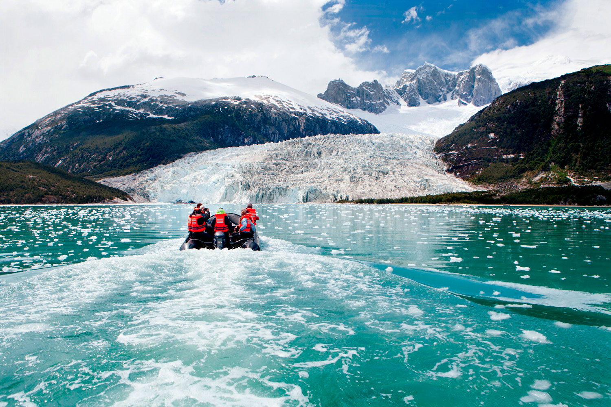

What to do on Cape Horn?
There are many things to do on Cape Horn including a scenic flight over the island, climbing the cliff, visiting the Lighthouse, visiting the Stella Maris Chapel and visiting the "actual" horn (this is the point where the Atlantic and Pacific Oceans meet). Another option is taking a cruise via Holland America or Celebrity Cruises to see the island and briefly stop at the island led by a guide. If you would like to discover more to do while visiting Cape Horn, click the image to the left.
Where is Cape Horn?
Cape Horn is an isalnd off the southern tip of South America and it is a part of the country Chile. This island is particularly special because it is a point where the Pacific and Atlantic Oceans meet. If you would like to see a more detailed map of Cape Horn, click the image to the right.
How to get to Cape Horn?
The safest way to travel to Cape Horn is through a cruise line, but you could travel via plane and car to the southern tip of Patagonia and then sail to the island. If you want to learn more about your options of travel, click the image to the left.





Want to see more images of Cape Horn? Click the image to the right!